以下ではTOMOYO LinuxのLiveCDの使い方について解説します。 TOMOYO Linux LiveCDは、CDで起動できるLinuxディストリビューションであるUbuntuに、 TOMOYO Linuxカーネルとツールをインストールして基本的な設定を行った状態で配布しているCDイメージです。 TOMOYO Linux LiveCDを使うことで、既存の環境に影響を与えることなく手軽にTOMOYO Linuxを体験できます。
TOMOYO Linux LiveCDのISOイメージは、TOMOYO Linuxプロジェクトの LiveCDのページ からダウンロードできます。回線が細くてダウンロードできないとか、 CD-Rに焼くのが面倒だという方のために、各種イベントでも配布していきます。 イベント参加予定は基本的にメーリングリストでアナウンスされますので、 tomoyo-usersにご参加ください。
ダウンロードしたISOイメージは書き込みソフトでCD-Rに焼いてください。 また、無料で利用できるVMware Playerで ISOイメージのままTOMOYO Linux LiveCDを起動することもできます。
CD-Rに焼いたLiveCDをCD-ROMドライブに入れてマシンを起動するか、 前節で紹介した方法でVMware Player上でISOイメージから起動すると、 以下の画面が表示されます。
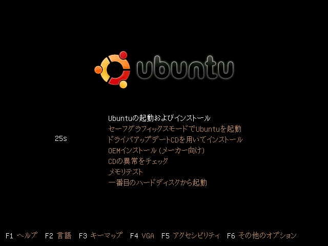
この状態でしばらく待つかEnterキーを押すと、通常のUbuntuと同様に起動します。 以下のようなデスクトップが表示されればLiveCDでの起動は完了です。
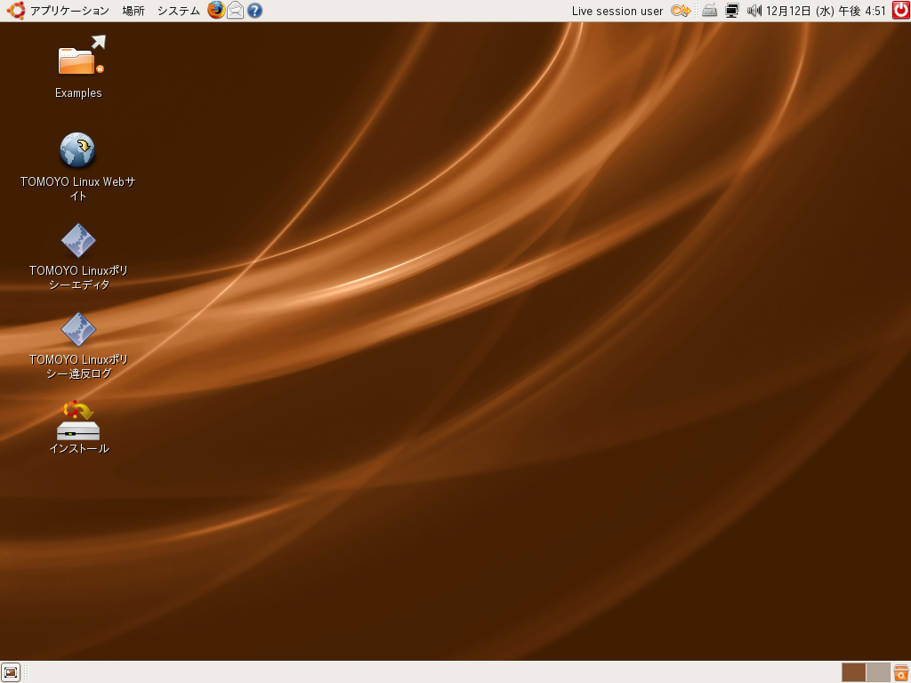
基本的に通常のUbuntuとほとんど同じですが、 デスクトップにTOMOYO Linux独自の2つのアイコンが存在します。
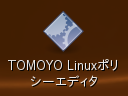 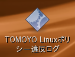
まずは「TOMOYO Linuxポリシー違反ログ」アイコンをダブルクリックしてみてください。 以下のようなウィンドウが表示されます。
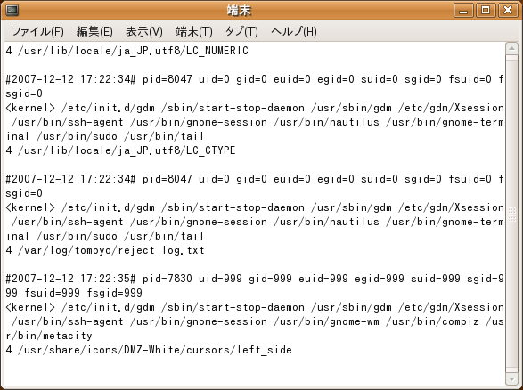
この画面はTOMOYO Linuxのポリシーに違反したアクセスログを表示しており、 新たなアクセス違反が発生すればすぐに表示されるようになっています。 LiveCDは何も許可を与えないポリシーで起動されるので、 全てのアクセスがポリシー違反ログとして出力されます。 ウィンドウを開いたままで、さまざまな操作をしてみてください。 どんなプロセスがどんなファイルにアクセスしたかが逐次表示されます。
続けて、「TOMOYO Linuxポリシーエディタ」アイコンをダブルクリックしてみてください。 以下のようなウィンドウが表示されます。
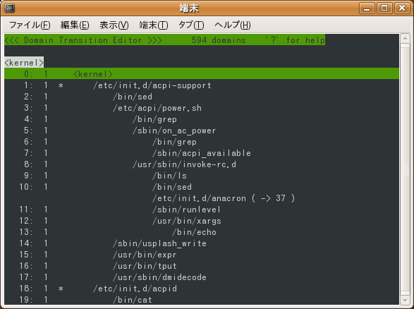
この画面には今までにどのようなプロセスが起動されたかを木構造で表示しており、 それぞれの行はドメインとよばれます。 システム起動時から、実行されたすべてのプロセスがTOMOYO Linuxカーネルで監視されており、 どんなプロセスがどんなファイルにアクセスしたかなどの情報が、すべてポリシーとして記録されています。 ポリシーエディタを使ってポリシーをブラウズするだけで、 システムの挙動を手に取るように把握することができるのがTOMOYO Linux LiveCDの最大の特徴です。
ポリシーエディタの最初の画面では、<kernel>を基点として、 どんなプロセスがどんなプロセスを起動したのかが木構造で表示されます。 カーソルキーやPageUp, PageDownキーで適当にスクロールして、 システム内でどんなプロセスが起動されたかを調べてみてください。
試しにgnome-terminalというプロセスを探してみましょう。 'F'キーを押すと最下行に検索のための1行入力が表示されますので、 そこに'gnome-terminal'と入力してEnterキーを押すことで、 すぐにgnome-terminalを見つけられます。
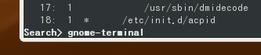
gnome-terminalの下には/usr/bin/sudoという行が存在し、 さらにその下に、/usr/bin/tailや/usr/lib/ccs/editpolicyという行が 存在するのが見てとれます。
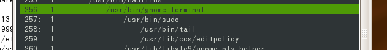
表示されている/usr/bin/tailの行にカーソルを合わせてEnterキーを押してみましょう。
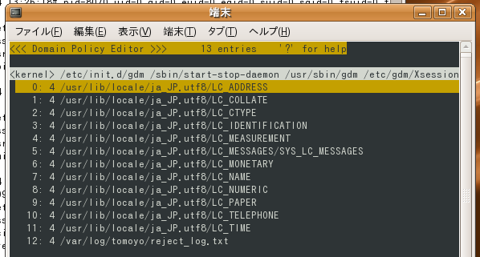
それぞれの行の一番左が行番号で、その次に表示されている数字はアクセスの種類を表しています。 この数字はchmodコマンドで使用できるパーミッションを表す数字と同じで、 1が実行、2が書き込み、4が読み込み、6が読み書きアクセスを表しています。 画面から、tailコマンドが各種ロケールファイルと、/var/log/tomoyo/reject_log.txtというファイルを読み込んだことが読み取れます。 これはデスクトップの「TOMOYO Linuxポリシー違反ログ」という アイコンをダブルクリックして実行した結果学習されたポリシーです。
もとのドメインの木構造の画面に戻るためにはEnterキーを押します。 プロセスがどういう履歴で起動され、どんな資源にアクセスしているかをブラウズしてみてください。
学習されたポリシーを見るだけでなく、TOMOYO Linuxによるアクセス制御を体験してみましょう。 先ほどのポリシーエディタの画面は閉じずにそのままにしておいて、 画面上端に表示されている「アプリケーション」メニューから、「アクセサリ」「端末」を起動してください。
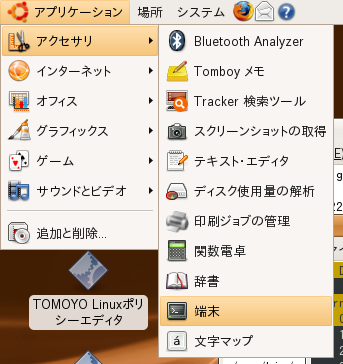
端末が起動できたら、先ほどのポリシーエディタの画面に戻り、ドメインの木構造が表示されている状態で、 'R'キーを押してポリシーを再読み込みしてください。 そして、gnome-terminal以下の/bin/bashを探して見てください。 検索は先ほどと同じく'F'キーで行えます。
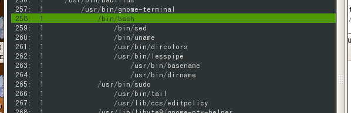
これは先ほど起動した端末内で実行されているbashで、すでにsedやunameなどのプログラムを自動的に実行していることが分かります。 端末の画面で、以下のコマンドを実行してください。
$ head /etc/passwd $ bash $ tail /etc/passwd $ exit
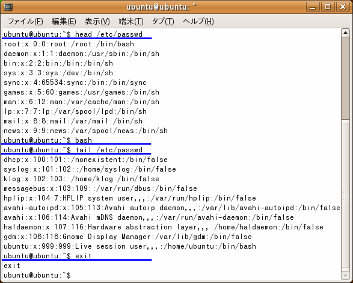
再度ポリシーエディタの画面に戻って'R'キーを押すと、実行したプログラムが追加されていることが分かります。
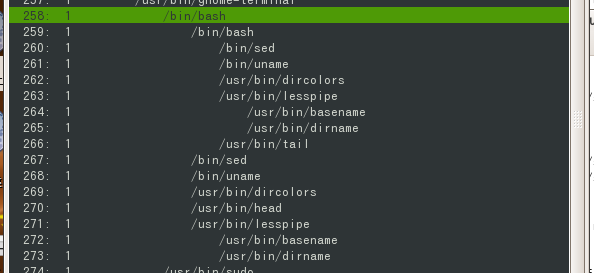
この画面で、行番号の次に表示されている数字に注目してください。 今は全ての行で'1'と表示されています。
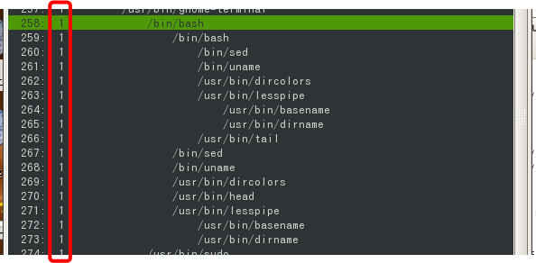
これはそのプロセスが動いているTOMOYO Linuxのモードを表しており、プロファイル番号とよばれる値です。 LiveCDのプロファイル番号は以下の4種類が存在し、あらかじめ全て1（学習モード）に設定されています。
| プロファイル番号 | 意味 |
|---|---|
| 0 | 無効モード（TOMOYO Linuxは何もしない） |
| 1 | 学習モード（ポリシー違反のアクセスは許可してポリシーに追加する） |
| 2 | 確認モード（ポリシー違反のアクセスは許可してログを出力する） |
| 3 | 強制モード（ポリシー違反のアクセスは拒否する） |
TOMOYO Linuxのアクセス制御を有効にするには、プロファイル番号3の強制モードを割り当てる必要があります。 今回はプロセスツリーに存在する2つのbashをアクセス制御の対象としてみましょう。 まず、gnome-terminal直下のbashにカーソルを合わせてスペースキーを押します。 すると、行番号の左側に'&'マークが表示されます。これでこの行が選択された状態になります。
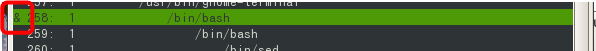
さらに1つ下の行のbashも選択しましょう。カーソルを2つ目のbashに合わせてスペースキーを押すことで、 2つ目のbashに'&'マークをつけることができます。
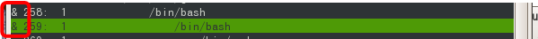
この状態で'S'キーを押すと、ポリシーエディタの最下行にプロファイル番号を入力する1行入力が表示されます。 アクセス制御を体験するために、選択した2つのbashにプロファイル3（強制モード）を割り当てましょう。
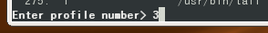
2つのbashにプロファイル番号3が割り当てられました。
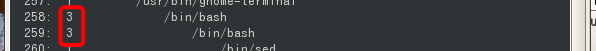
これでもうbashは強制モードで動いています。端末の画面で適当なコマンドを入力してみてください。 先ほど学習モードで実行したコマンド以外は拒否されるはずです。以下の画面では、 head /etc/passwdの実行には成功していますが、lsやpsコマンドの実行は拒否されています。
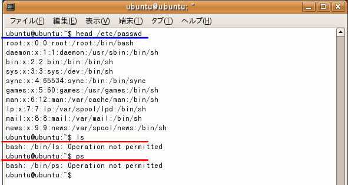
また、1段階目のbashではtail /etc/passwdは拒否されますが、bashをもう1段起動した場合には許可されます。
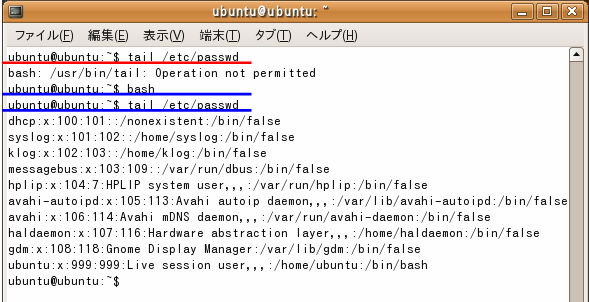
これは、TOMOYO Linuxがプロセスをその実行履歴によって区別していることに起因しています。 再度ポリシーエディタを見ると、
の2種類のbashが存在し、headコマンドは1つ目の、tailコマンドは2つ目のbashのみにしか許可されていないことが分かります。 TOMOYO Linuxはシステム起動時から起動されたすべてのプロセスを監視しており、プロセスは実行履歴によって細かく区別されます。
設定や学習させたポリシーはLiveCDで起動している間のみで有効で、システムを終了させると失なわれてしまいます。 継続的に使用したい場合はハードディスクにインストールしてください。 デスクトップの「インストール」アイコンをダブルクリックしてあとの指示に従えば、 TOMOYO Linuxが導入された状態のUbuntuをハードディスクにインストールできます。 LiveCDとして起動する分には既存の環境に影響を与えませんが、 ハードディスクにインストールすると既存のOS領域を上書きしてしまう可能性があります。 くれぐれも注意ください。
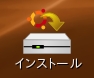
ハードディスクから起動し、rootユーザ権限で/usr/lib/ccs/savepolicyコマンドを実行すれば、 /etc/ccsディレクトリにポリシーを保存でき、次回起動時からは保存したポリシーを参照するようになります。
上記手順で解説した内容で、TOMOYO Linuxの基本的な機能であるファイルに対するアクセス制御を体験できました。 TOMOYO Linuxにはここで紹介した機能以外にもさまざまな機能があります。 さらにTOMOYO Linuxを使いこなしたいという方は、以下のドキュメントをご参照ください。